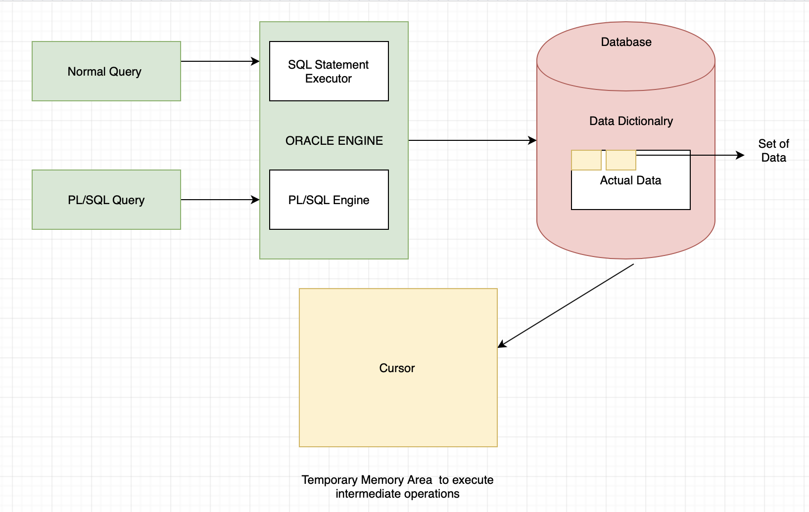

Cursor
When an SQL statement is processed, Oracle creates a memory area known as context area. A cursor is a pointer to this context area. It contains all information needed for processing the statement. In PL/SQL, the context area is controlled by Cursor. A cursor contains information on a select statement and the rows of data accessed by it.
A cursor is used to referred to a program to fetch and process the rows returned by the SQL statement,
one at a time. There are two types of cursors:
(i) Implicit Cursors
(ii) Explicit Cursors

(i) Implicit Cursors
The implicit cursors are automatically generated by Oracle while an SQL statement is executed, if you
don't use an explicit cursor for the statement.
These are created by default to process the statements when DML statements like INSERT, UPDATE, DELETE
etc. are executed.
Implicit /Explicit Cursor Attributes
They are various Attributes used in the cursor :
(i) %FOUND : Its return value is TRUE if DML statements like INSERT, DELETE and UPDATE affect at least one row or more rows or a SELECT INTO statement returned one or more rows. Otherwise it returns FALSE.
%NOTFOUND : (ii) Its return value is TRUE if DML statements like INSERT, DELETE and UPDATE affect no row, or a SELECT INTO statement return no rows. Otherwise it returns FALSE. It is a just opposite of %FOUND.
%ROWCOUNT : (iii)It returns the number of rows affected by DML statements like INSERT, DELETE, and UPDATE or returned by a SELECT INTO statement.
The Example of Implicit Cursors
(ii) Explicit Cursors
The Explicit cursors are defined by the programmers to gain more control over the context area. These cursors should be defined in the declaration section of the PL/SQL block. It is created on a SELECT statement which returns more than one row.
Steps for Explicit Cursors1. Declare
2. open
3. fetch
4. close
1. Declare :- It defines the cursor with a name and the associated SELECT statement.
Syntax of Declare Cursors
CURSOR name IS
SELECT statement;
2. Open :- It is used to allocate memory for the cursor and make it easy to fetch the rows returned by the SQL statements into it.
Syntax of open Cursors
OPEN cursor_name;
3. fetch :- It is used to access one row at a time. You can fetch rows from the above-opened cursor as follows
Syntax of fetch the Cursors
FETCH cursor_name INTO variable_list;
4. close :It is used to release the allocated memory. The following syntax is used to close the above-opened cursors.
Syntax of close the Cursors :
Close cursor_name;
Syntax of Explicit Cursors
CURSOR cursor_name IS select_statement;
Example of Explicit Cursors

Cursor for loop
The cursor FOR LOOP implicitly its loop index as a record of type%ROWTYPE, opens a cursor, repeatedly fetcges rows of the values from the active set into fields in the record, and then close the cursor when all rows have been processed or when the EXIT command is encountered.
Example of Cursor for loop